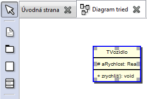
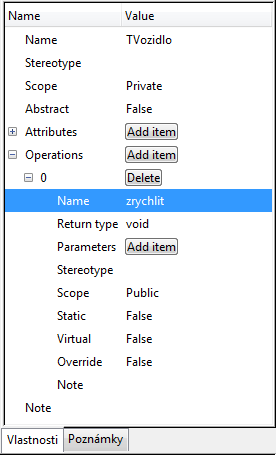

Editácia prvku
Mnohé prvky majú okrem svojho mena aj rôzne špecifické vlastnosti. (Napríklad triedy mávajú atribúty a metódy.)
Tieto vlastnosti sa zvyčajne tiež dajú upravovať pomocou záložky "Vlastnosti".
Po pridaní atribútu stlačením tlačidla "Add item" v záložke "Vlastnosti", je možné upravovať jeho vlastnosti. (Napríklad meno, typ...).
Po pridaní metódy stlačením tlačidla "Add item" v záložke "Vlastnosti", je možné upravovať vlastnosti metódy. (Napríklad názov, návratový typ, parametre...).



